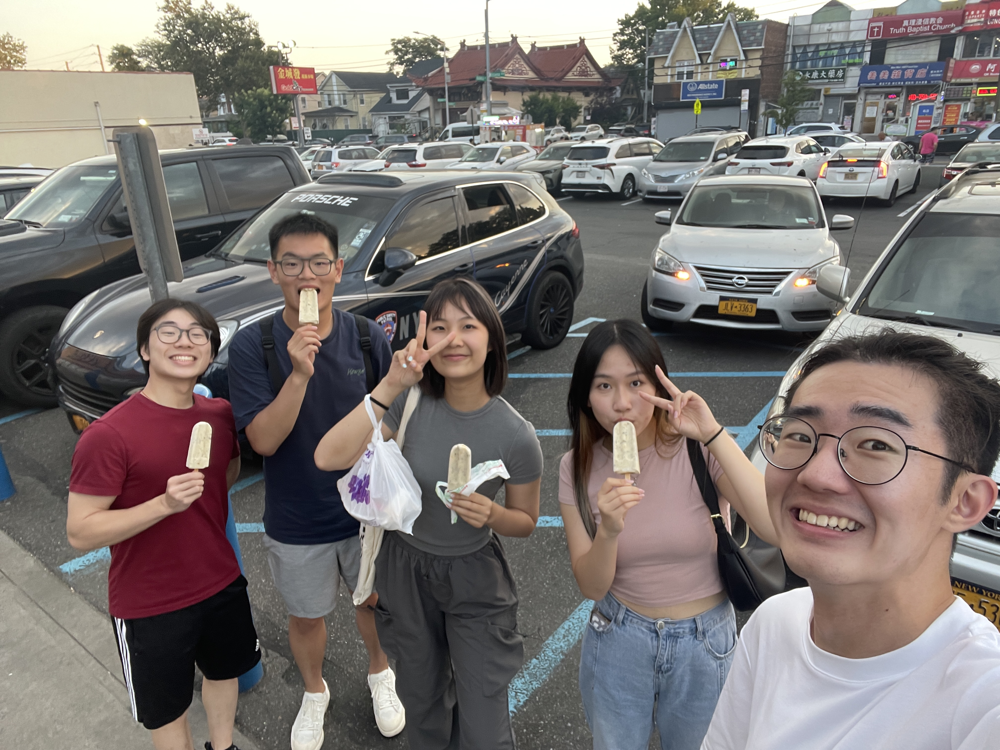
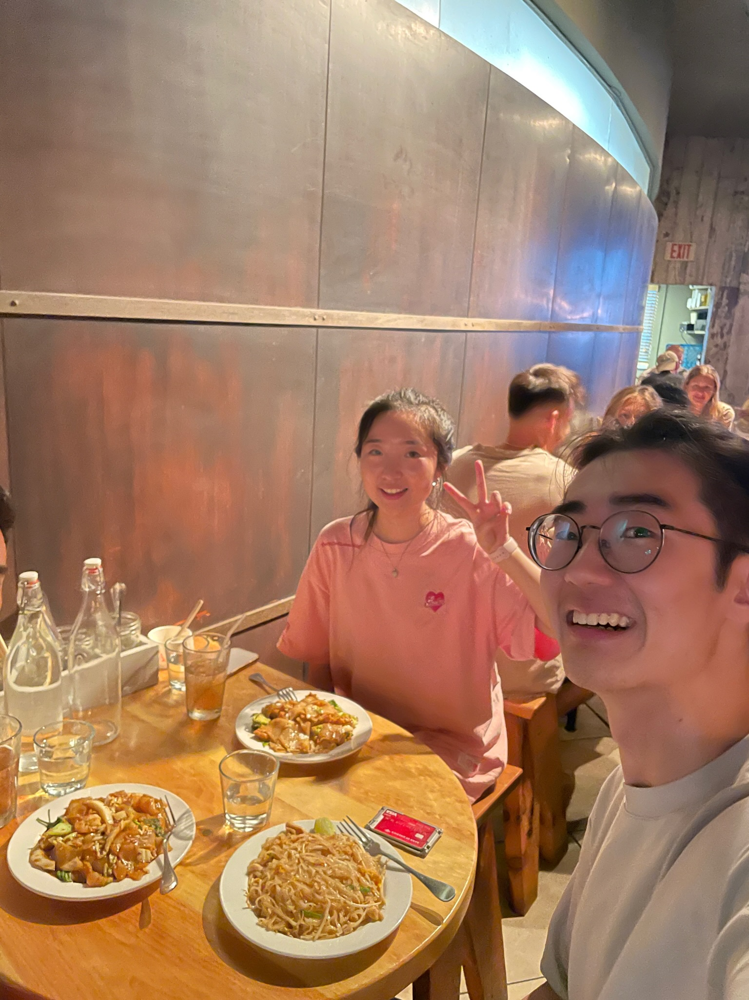
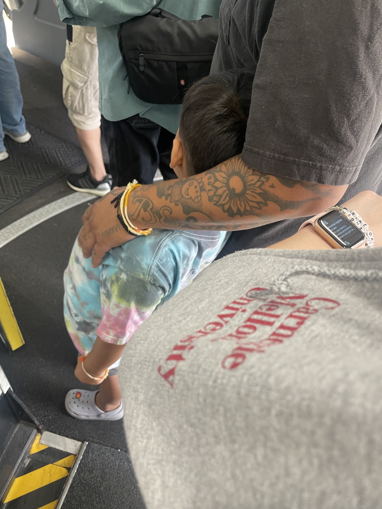

Ongoing Journey - July 2023
Breaking Up, Timeline in Relationships
 placeholder
placeholder
A friend recently ended her three-year relationship, heard about it while having dinner with her.
Xiaohan mentioned people usually have a checklist of the things they are looking for, and relationships happen when most of the boxes are checked off.
Hearing the breakup story during dinner, I wonder how much consistency matters in that checklist. When the girl kept advancing in life while the boy stood still, how much did that influence the final outcome of the relationship.
Summer does seem like the breakup season; most people around me are single while writing this. Hope all can find their loved one in the end :)
New York, Catching Up with Friends
friends!Internship ended last week of July, traveled back to the east coast and visited friends. The good news was many were happy to meet up; the even better news was too many were happy to meet lol, ended up grouping many of the meetups.
One of the characteristics of ‘introvertedness’ is preferring one on one, deeper conversations, so it was a brand-new experience going into a Chinese home kitchen in a party of 6, listening to the conversation shifting from K-Pop idol to the financial state of the US, and back to K-pop idol (yes, there are apparently 13).
…
Though friends are individual dots and networks are friends that know each other, I wanted to do these sort of ‘friends gatherings’ more, connecting different people together, see a different side of them.
guess how many friends were suppose to be in the frame :)Airplane WiFi
小猪佩奇身上纹All 5 plane rides I was on had in-plane wifi; you can watch shows, browse the internet just like when you are in the terminal. Every time the flight attendant proudly announces the plane equipped with wifi, I felt a bit of nostalgia, mind flashing back to 2019, handing the cashier ¥100 paper bill for the first time back in China, the guy’s eyes widened, pointed to the QR code on the screen and said:
‘Do you not have WeChat Pay?’
…
Not just wifi, more and more places have signals now, underground metros, tunnels, elevators. I never consider myself living under a rock, but it’s always exciting to see these quality of life changes slowly happening around life.
I didn’t use the in-plane wifi though. With more and more responsibilities on my plate, the 4-hour plane ride felt like the only time I get to disconnect from my world and recharge, where I can sleep, daydream, or just look at the clouds, allow my mind to float in peace, think of whatever I want before landing.
Listened on the Huberman’s Lab that the best productivity app on the phone is airplane mode, perhaps there is some merit in detaching yourself from the world, recollect, so one can better move on through the journey :)
2019 年我没有本地号码所以用不了微信支付。好心的大叔帮我联系了楼上的外公，并在他下来替我付钱之前的那半小时，在小卖部里和我说起了新中国成立的故事。